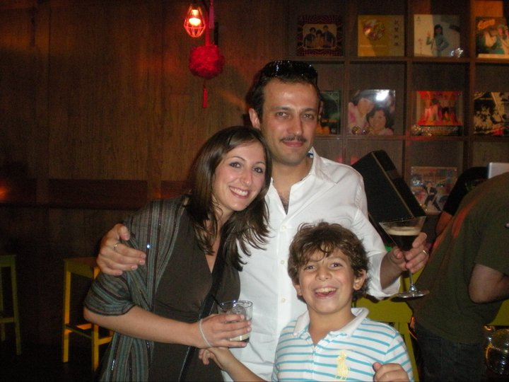
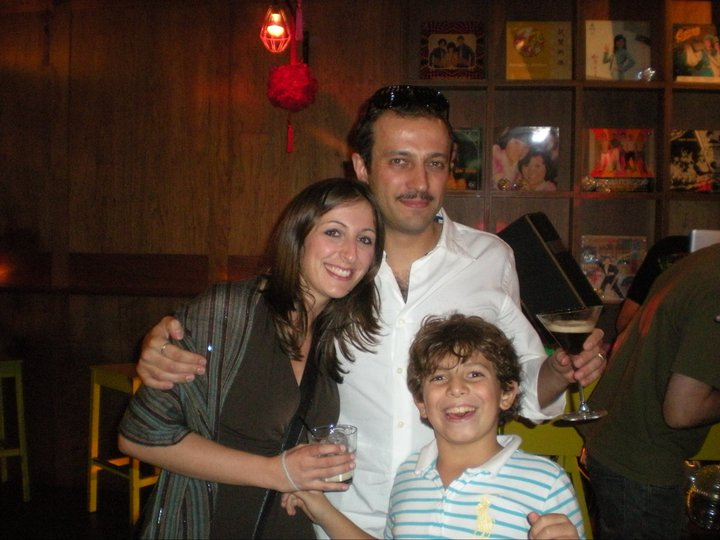

About This Work
This series explores the concept of digital identity through generative algorithms that create unique visual representations of personal data. The work questions the nature of identity in digital spaces and how algorithms interpret human characteristics.
Each piece in the series uses different data inputs - from social media patterns to biometric data - to generate abstract visual representations. The process involves machine learning models that analyze personal digital footprints and translate them into color, form, and movement.
The resulting artworks serve as digital portraits that reflect our increasingly algorithmic existence.